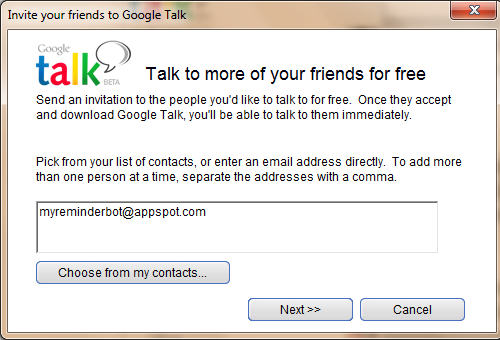
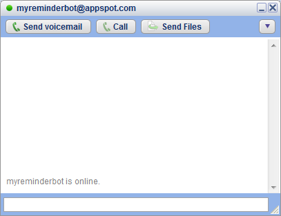
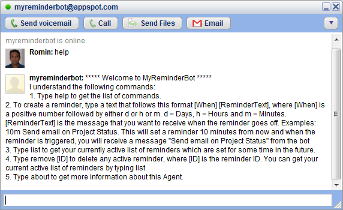
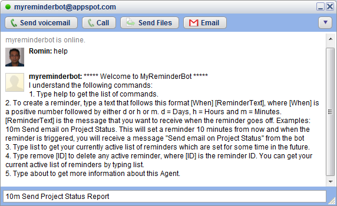
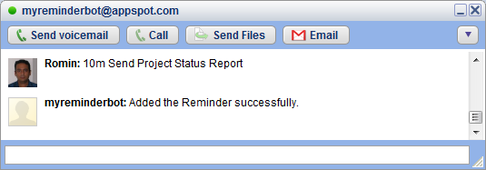
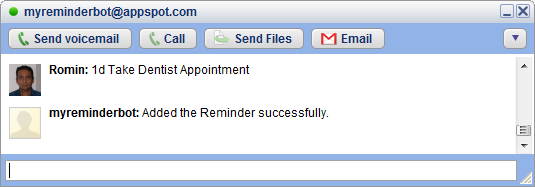
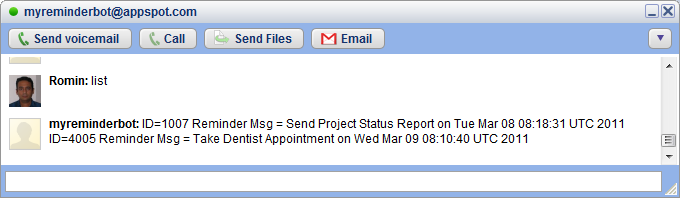
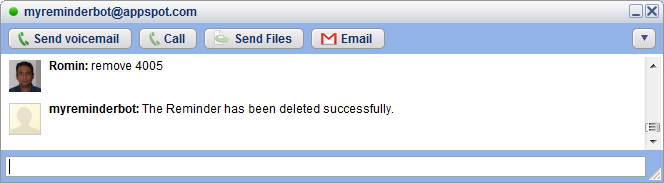
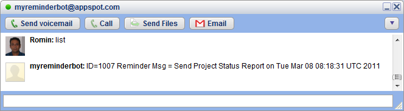
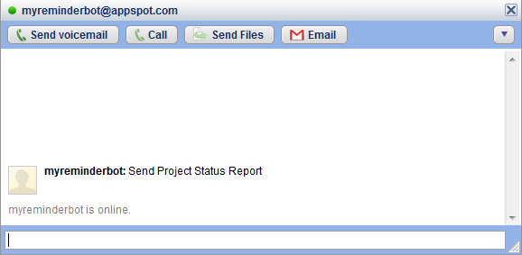

2 Minute Usage Guide
We will first cover a simple use case as documentated at the Google Chat Bot Reminder contest so that you understand how the Bot can help you. And then we will zoom into the step by step instructions for setting the Bot up to take care of the reminders.
Use Case
I need to remind myself to call someone back in one hour.
User enters: 1h Call Pete to see if he has finished development task 123.
An hour from the time I chatted the bot, the bot will chat back to me Call Pete to see if he has finished development task 123.
Step by Step Guide:
Step 1 :Launch Google Talk, Sign In and click on the "Add" button shown below:
Step 2 :Add myreminderbot@appspot.com as a contact and complete the steps.

Step 3 :This will add the My Reminder Bot to your friend list. Click on it and you should see that the My Reminder Bot is available as shown below.

Step 4 :My Reminder Bot understands only a few commands. To get a list of commands that it understands, simply type help as shown below. It will display a list of commands that it will obediently follow. It will also keep emotions aside and continue to execute the same command even if you try to bore it :-)

Step 5 :You can set a reminder in the future by either days(d), hours(h) or minutes. Examples are given below:
- 10m Call Dentist : This means set a reminder 10 minutes from now and when the reminder triggers, send me an Instant Message "Call Dentist" via Google Talk.
- 5d Send Project Status Report : This means set a reminder 5 days from now with the message "Send Project Status Report"
- 1h Lunch with Team : This means set a reminder 1 hour from now with the message "Lunch with Team"
In the screenshot below, we have set an example reminder "10m Send Project Status Report". This means that we are telling the My Reminder Bot to setup a reminder 10 minutes from now. And when 10 minutes are up, it will send me a message "Send Project Status Report"

Step 6 : On successfully adding the Reminder, you will see the message below. If there are any issues with setting the reminder due to an incorrect format or any other reason, the Bot will tell you exactly what went wrong.

Step 7 : Another example reminder is shown below. Here we are setting a reminder 1 day from now.

Step 8 : You can check all your active reminders, by simply giving the list command as shown below. All your active reminders will be shown. The key point to note is the ID.

Step 9 : To remove any active reminder, you can simply given the remove [ReminderID] command. The [ReminderID] is the ReminderID that was provided to you as part of the list command that we saw above. In this example, I provide a valid ReminderId that I had fetched earlier and give the command to remove it.

Step 10 : Since I remove one of the reminders, I only see a single reminder now in the list as shown below:

Step 11 :As expected, My Reminder Bot pings me via an Instant Message as shown below.

Hope you like the service. Thank You for using My Reminder Bot.